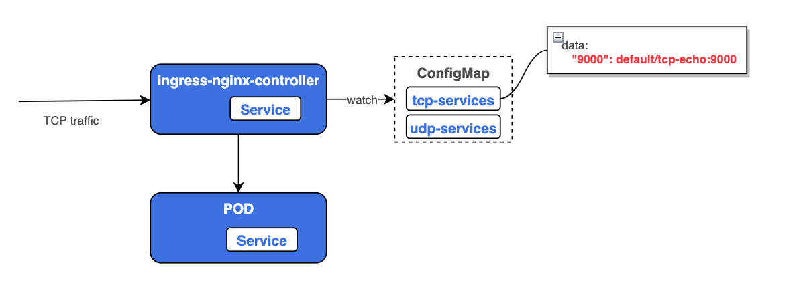
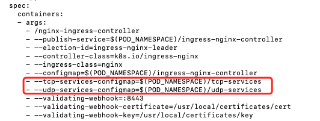
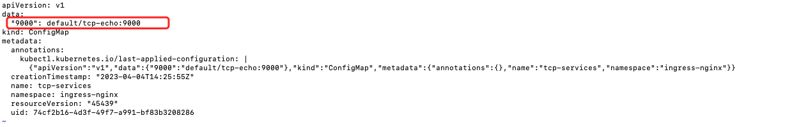
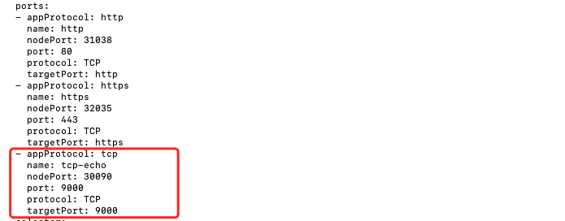
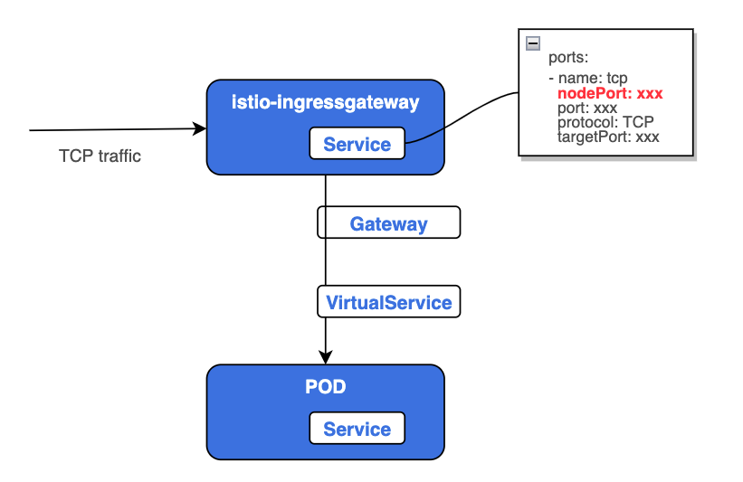

- 作者 :Xcbeyond
- 发表于 :2023-04-05 00:13:10
- 分类 : Kubernetes
在 kubernetes 或 istio 应用中，一般都是通过 kubernetes ingress 或者 istio ingressgateway 来暴露 HTTP/HTTPS 的服务。但是在实际应用中，还是有不少应用是TCP长连接的，这个是否也是可以通过 ingress 来暴露呢？
本文将讲述如何通过 kubernetes ingress 或者 istio ingressgateway 来暴露 TCP 的服务。
1、部署示例服务
-
部署一个 tcp-echo 服务, 用于验证通过 kubernetes ingress 或 istio ingressgateway 来访问 tcp 服务。
执行命令
kubectl apply -f tcp-echo.yaml部署 tcp-echo 服务:# tcp-echo.yaml apiVersion: v1 kind: Service metadata: name: tcp-echo labels: app: tcp-echo service: tcp-echo spec: ports: - name: tcp port: 9000 - name: tcp-other port: 9001 # Port 9002 is omitted intentionally for testing the pass through filter chain. selector: app: tcp-echo --- apiVersion: apps/v1 kind: Deployment metadata: name: tcp-echo spec: replicas: 1 selector: matchLabels: app: tcp-echo version: v1 template: metadata: labels: app: tcp-echo version: v1 spec: containers: - name: tcp-echo image: docker.io/istio/tcp-echo-server:1.2 imagePullPolicy: IfNotPresent args: [ "9000,9001,9002", "hello" ] ports: - containerPort: 9000 - containerPort: 9001 -
部署一个 sleep 服务，作为发送请求的测试客户端。
执行命令
kubectl apply -f sleep.yaml部署 sleep 服务:# sleep.yaml apiVersion: v1 kind: Service metadata: name: sleep labels: app: sleep service: sleep spec: ports: - port: 80 name: http selector: app: sleep --- apiVersion: apps/v1 kind: Deployment metadata: name: sleep spec: replicas: 1 selector: matchLabels: app: sleep template: metadata: labels: app: sleep spec: terminationGracePeriodSeconds: 0 containers: - name: sleep image: curlimages/curl command: ["/bin/sleep", "3650d"] imagePullPolicy: IfNotPresent volumeMounts: - mountPath: /etc/sleep/tls name: secret-volume volumes: - name: secret-volume secret: secretName: sleep-secret optional: true -
部署成功后，发送一些TCP流量来确认 tcp-echo 服务已启动且正在运行。
# 获取 sleep 的 pod名称 $ kubectl get pods -l app=sleep NAME READY STATUS RESTARTS AGE sleep-557747455f-gwt2j 2/2 Running 4 2d4h # 进入 sleep 容器内，使用 nc 命令向 tcp-echo 服务发送tcp请求 $ kubectl exec -it sleep-557747455f-gwt2j -c sleep sh / $ nc -v tcp-echo 9000 tcp-echo (10.96.141.51:9000) open xcbeyond hello xcbeyond
2、kubernetes ingress tcp
2.1 原理
Kubernetes Ingress Controller 在启动时会去watch两个configmap(一个tcp，一个 udp)，里面记录了后面需要反向代理的TCP的服务以及暴露的端口。如果里面的key-value发生变换，Ingress controller 会去更改 Nginx 的配置，增加对应的 TCP 的 listen 的 server 以及对应的后端的 upstream。

2.2 最佳实践
前提条件：
-
已安装 ingress controller。
如果未安装，可以参考执行命令
kubectl apply -f https://raw.githubusercontent.com/kubernetes/ingress-nginx/controller-v1.7.0/deploy/static/provider/cloud/deploy.yaml，完成安装。
-
kubernetes ingress controller 中增加需要 watch 的 configmap。
通过命令
kubectl edit -n ingress-nginx deployment ingress-nginx-controller，在 ingress-nginx-controller 中新增参数 tcp-services-configmap、udp-services-configmap，如下图所示：
-
创建对应的 configmap。
暂时不需要配置服务。 对于已经默认创建好了对应的configmap: tcp-services, udp-services，无需再创建。
1）执行命令
kubectl apply -f tcp-services-cm.yaml，tcp-services-cm.yaml 文件内容如下：# tcp-services-cm.yaml apiVersion: v1 kind: ConfigMap metadata: name: tcp-services namespace: ingress-nginx2）执行命令
kubectl apply -f udp-services-cm.yaml，udp-services-cm.yaml 文件内容如下：# udp-services-cm.yaml apiVersion: v1 kind: ConfigMap metadata: name: udp-services namespace: ingress-nginx -
tcp-services configmap 中配置 TCP 服务的端口。
执行命令
kubectl edit -n ingress-nginx cm tcp-services, 在 data 部分新增暴露的TCP端口，格式为<Nginx port>: <namespace/service name>:<service port>:[PROXY]:[PROXY]，如下图所示：
图例中，是将
default/tcp-echo:9000服务暴露到 nginx ingress 的 9000 端口。 -
Ingress Controller service 对外暴露 TCP 端口。
因为 TCP 服务是需要通过端口来区分服务的，所以每个服务都需要增加一个独立端口，因此，需要给 Ingress Controller 增加新的端口来映射后端的TCP服务。
执行命令
kubectl edit -n ingress-nginx svc ingress-nginx-controller，如下图所示：
-
通过 kubernetes ingress 访问 TCP 服务。
直接通过 Ingress Controller service 暴露的 TCP 端口（nodePort）进行访问即可。
借助命令
nc -v <ip> <port>完成验证。
3、istio ingressgateway tcp
前提条件：
- tcp-echo 服务已注入边车。
- istio 中已部署 isito-ingressgateway 服务。
本示例中，借助 isito-ingressgateway 中默认已开启的 31400 tcp 端口，完成验证。在实际业务功能中，可单独向 isito-ingressgateway 新增多组 tcp 端口（即：在 isito-ingressgateway 的 service 中，新增 tcp 协议端口）。

-
定义 istio gateway。
执行命令
kubectl apply -f tcp-echo-gateway.yaml创建服务 tcp-echo 的 gateway：# tcp-echo-gateway.yaml apiVersion: networking.istio.io/v1alpha3 kind: Gateway metadata: name: tcp-echo-gateway spec: selector: istio: ingressgateway # use istio default controller servers: - port: number: 31400 # istio-ingressgateway tcp port name: tcp protocol: TCP hosts: - "*" -
定义 virtualService。
执行命令
kubectl apply -f tcp-echo-vs.yaml创建服务 tcp-echo 的 virtualService:apiVersion: networking.istio.io/v1alpha3 kind: VirtualService metadata: name: tcp-echo-vs spec: hosts: - "*" gateways: - tcp-echo-gateway tcp: - match: - port: 31400 # istio-ingressgateway tcp port route: - destination: host: tcp-echo # tcp-echo service port: number: 9000 -
通过 istio ingressgateway 访问 TCP 服务。
直接通过 istio-ingressgateway service 暴露的 TCP 端口（nodePort）进行访问即可。
借助命令
nc -v <ip> <port>完成验证。
参考文章：